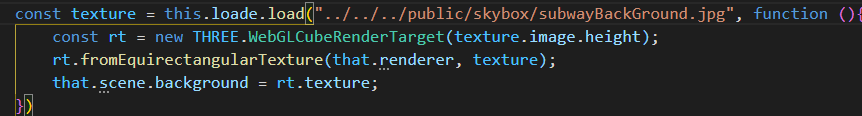
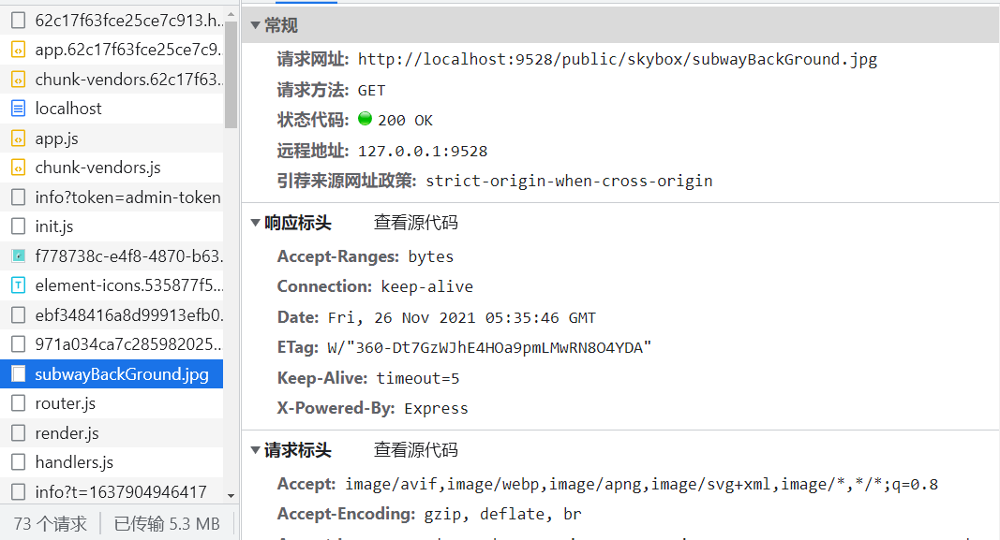
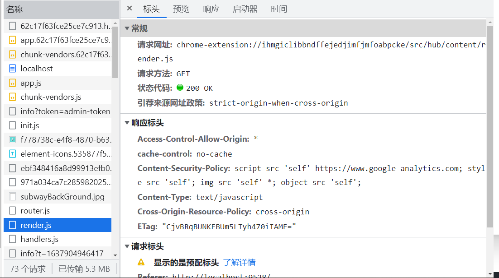
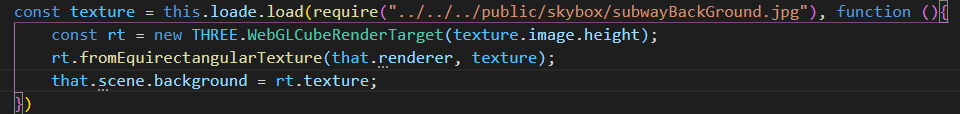
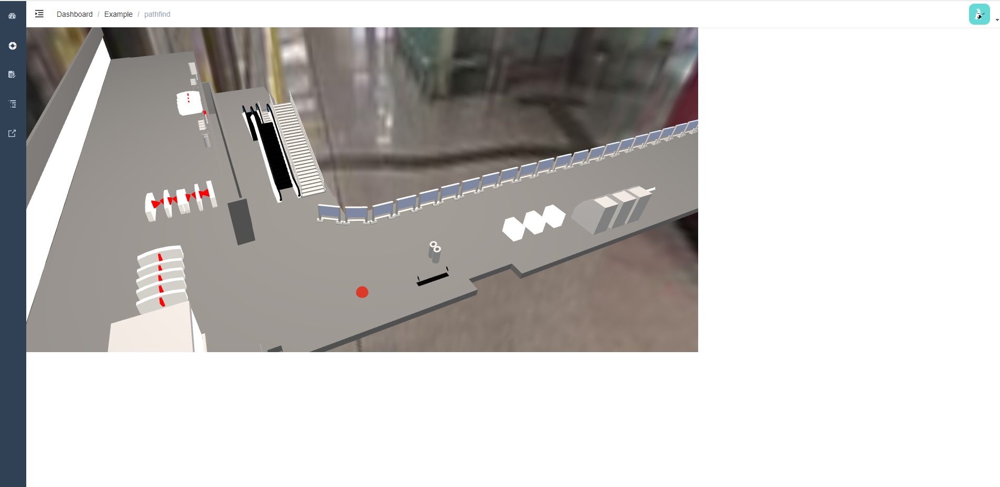

这几天在修改vue-admin-template的项目时出现了一个问题

我用相对路径引入了一张图片，但是在运行时无法显示，且浏览器控制台中无报错，查看浏览器中的网络窗口

可以看到，浏览器确实读到了我在代码中设置的路径，但是就是无法显示这张图片，原因是因为VUE会动态加载js文件，js文件会被加载到内存中，若直接输入文件的地址，会导致无法访问该文件，也就无法显示该图片，如果我们查看其他文件的地址

可以看到，其地址确实是在内存中的，因此，此时需要使用require()函数，将代码修改为如下

刷新页面，可以看到图片已正常显示
